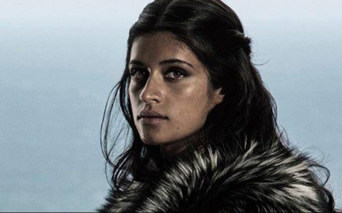

PERSONAJES PRINCIPALES:

Geralt de Rivia
Geralt of Rivia (en polaco : Geralt z Rivii ) es un personaje de ficción y protagonista de la serie de cuentos y novelas The Witcher del escritor polaco ...

Cirilla de Cintra
Princesa de Cintra que posee poderes mágicos. Es la nieta de la reina Calanthe, hija de Pavetta, y el destino de Geralt.

Yennefer de Vengerberg
Es uno de los personajes mas importantes de THE WITCHER de NETFLIX,y su historia de origen,poderes y aspecto deformado original es algo que abre numerosas preguntas...